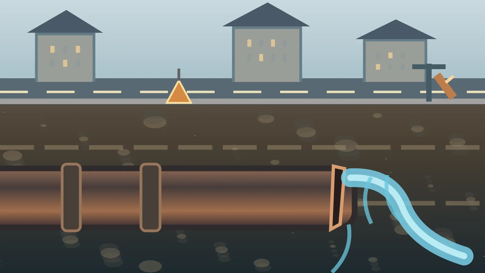

NYHETER / NORGE / INFRASTRUKTUR
Vannet som forsvinner før det når springen
Omtrent 30 prosent av renset drikkevann lekker ut av norske ledningsnett før det når husholdningene, ifølge regjeringen. Et nytt ekspertutvalg skal se på hvordan kommunene kan ruste opp vann og avløp uten at regningen løper løpsk.

Vannet er behandlet, klart til å drikkes og sendt ut på vei mot husene. Men en betydelig del kommer aldri fram. Ifølge regjeringens ferske gjennomgang lekker i gjennomsnitt rundt 30 prosent av renset drikkevann ut av distribusjonsnettet før det når norske husholdninger. Det er et nasjonalt gjennomsnitt, ikke et mål på hvor mye vann som forsvinner i hvert enkelt nabolag.
Kilder: Klima- og miljødepartementet, 6. november 2026 – ekspertutvalg for vann og avløp.
Problemet er lite synlig i hverdagen. De fleste opplever at vannet kommer når de åpner kranen. Under gatene ligger imidlertid rør som ble bygget i forskjellige tiår, med ulike materialer, standarder og behov for vedlikehold. En lekkasje betyr ikke alltid at en vei raser sammen. Ofte er resultatet et kontinuerlig tap som må håndteres gjennom oppsporing, reparasjon og fornyelse.
Kilder: Klima- og miljødepartementet, 6. november 2026 – ekspertutvalg for vann og avløp.
Hundrevis av milliarder i investeringer
Norsk Vann har anslått at norske vann- og avløpssystemer trenger investeringer på mellom 411 og 535 milliarder kroner i perioden 2025–2045. Omtrent halvparten gjelder ledningsnettet. Beløpet omfatter både vann og avløp, ikke bare reparasjon av drikkevannslekkasjer. Det er et beregnet fremtidig investeringsbehov, ikke allerede vedtatte offentlige utgifter.
Kilder: Klima- og miljødepartementet, 6. november 2026 – ekspertutvalg for vann og avløp.
Avløpssystemene står overfor sitt eget press. Når regn- og grunnvann trenger inn i avløpsrør, kan renseanleggene få større mengder vann å håndtere enn de er dimensjonert for. Ekstremnedbør, aldrende anlegg og skjerpede krav kan øke behovet for investeringer ytterligere. Et rør som ikke fungerer, kan dermed få konsekvenser både for drikkevannssikkerhet, natur og kommunal økonomi.
Kilder: Klima- og miljødepartementet, 6. november 2026 – ekspertutvalg for vann og avløp.
Hvem betaler for rørene?
Vann- og avløpstjenestene finansieres i stor grad gjennom gebyrer. Kommunene har ansvaret for å planlegge og gjennomføre nødvendige investeringer, og regningen føres i praksis videre til brukerne av tjenestene innenfor regelverket. Derfor er dette også en fordelingssak: To familier med lik inntekt kan møte ulike gebyrer avhengig av kommunen de bor i og de lokale kostnadene.
Kilder: Klima- og miljødepartementet, 6. november 2026 – ekspertutvalg for vann og avløp.
Regjeringen nedsatte 6. november et ekspertutvalg som skal se på alternative måter å organisere og regulere sektoren på. Utvalget skal levere rapport innen 1. desember 2027. Det betyr at nye anbefalinger fortsatt ligger fram i tid; ingen bestemt omorganisering eller finansieringsmodell er vedtatt som følge av oppnevningen.
Kilder: Klima- og miljødepartementet, 6. november 2026 – ekspertutvalg for vann og avløp.
Mer effektiv drift kan redusere unødvendige kostnader, men fornyelse av utslitte rør kan ikke erstattes av administrativ omorganisering alene. Det grunnleggende spørsmålet blir hvordan kommunene kan prioritere de mest risikoutsatte strekningene, sikre nok fagkompetanse og begrunne gebyrene for dem som betaler.
Kilder: Klima- og miljødepartementet, 6. november 2026 – ekspertutvalg for vann og avløp.
Tallet 30 prosent gjør vannsvinnet lett å forstå. Like viktig er det å stille mer presise lokale spørsmål: Hvor mye lekker i vår kommune? Hvor gamle er rørene? Hvor mange brudd har det vært? Hva koster dagens vanntap, og hva vil en oppgradering spare på sikt? Uten slike svar blir de nasjonale milliardene store og abstrakte – mens vannet fortsatt renner ut under føttene våre.
Kilder: Klima- og miljødepartementet, 6. november 2026 – ekspertutvalg for vann og avløp.
Kilder og dokumentasjon
Denne teksten er basert på tilgjengelige dokumenter og redaktørstyrt dekning. Selvstendige intervjuer, hovedbilde, sekundærbilde ved behov og redaksjonell publiseringskontroll gjenstår.